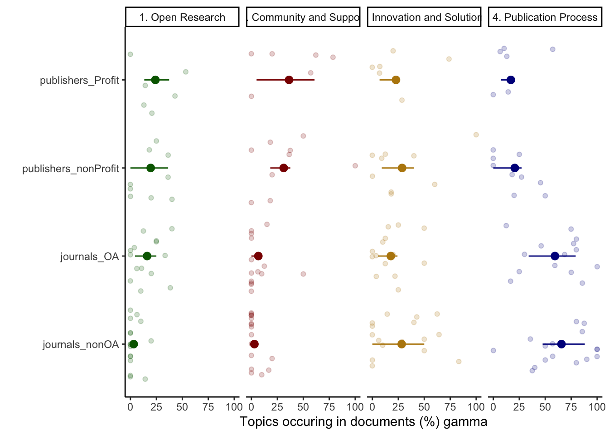
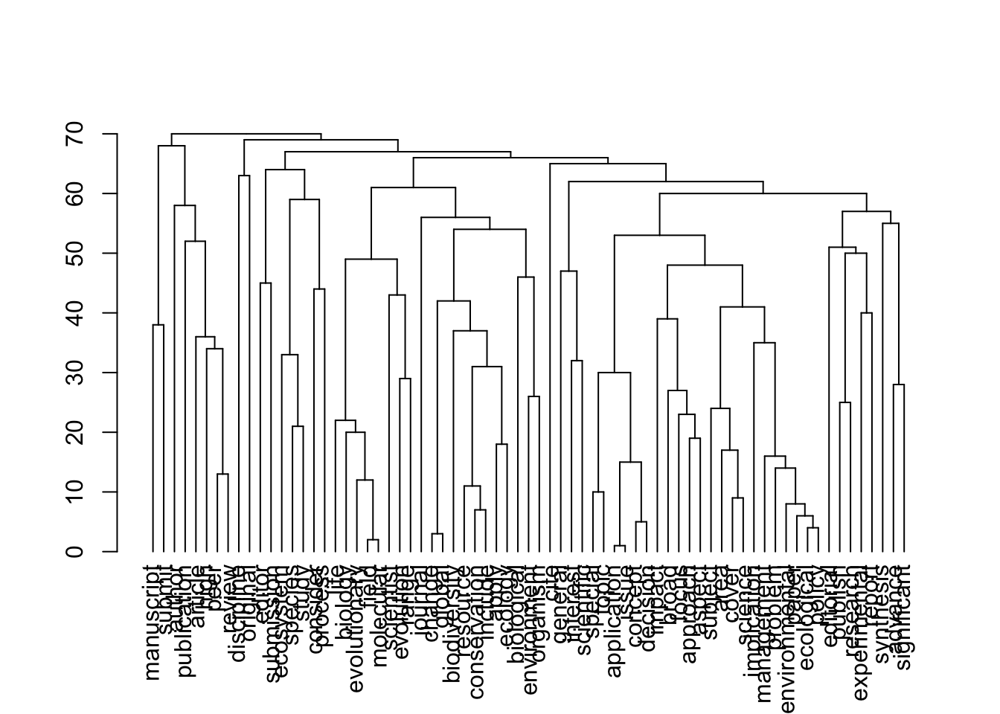
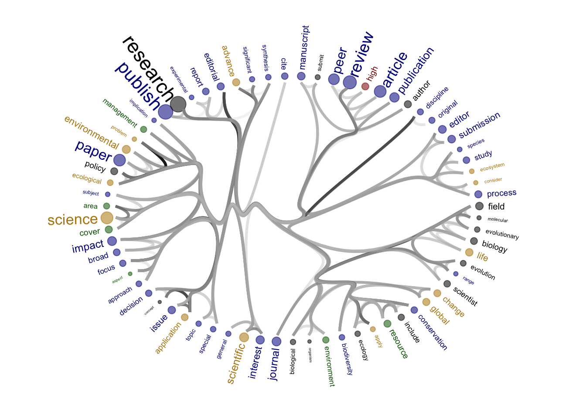
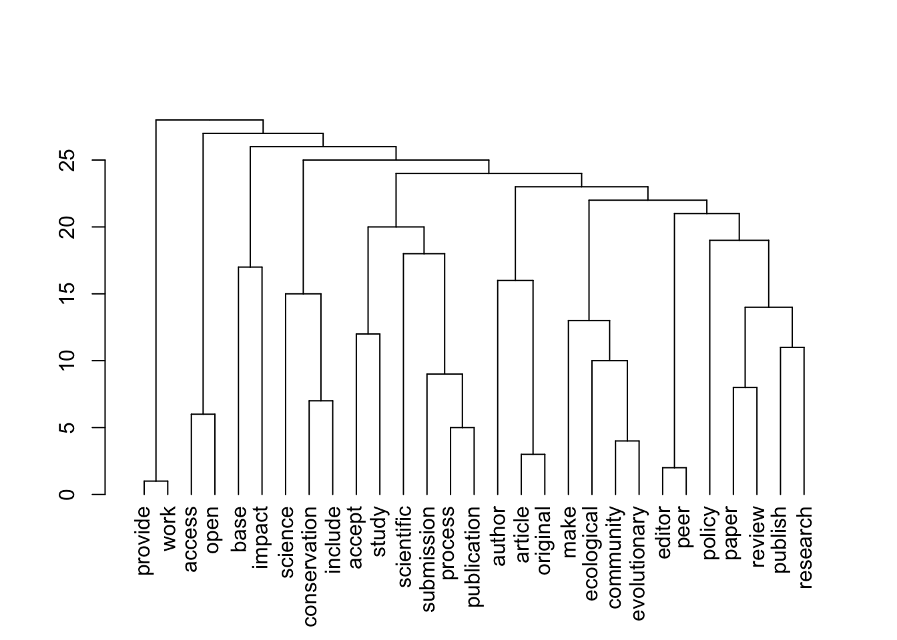
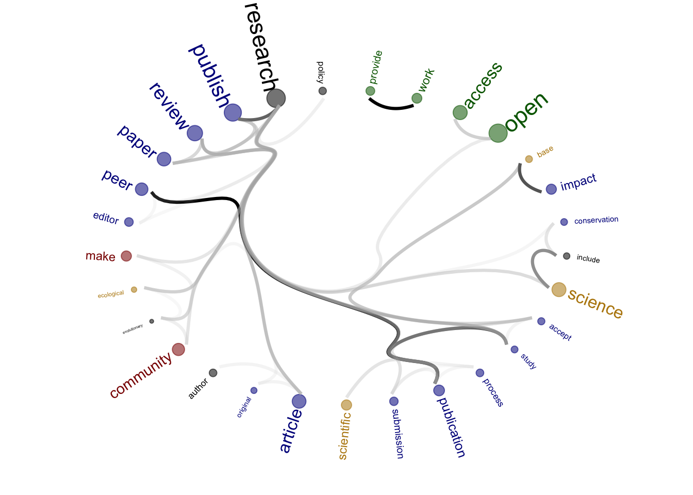
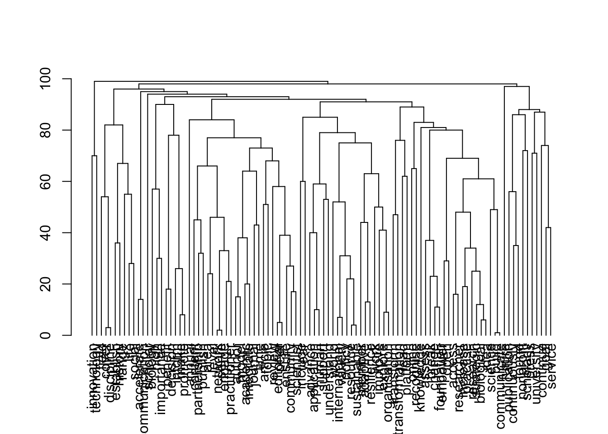
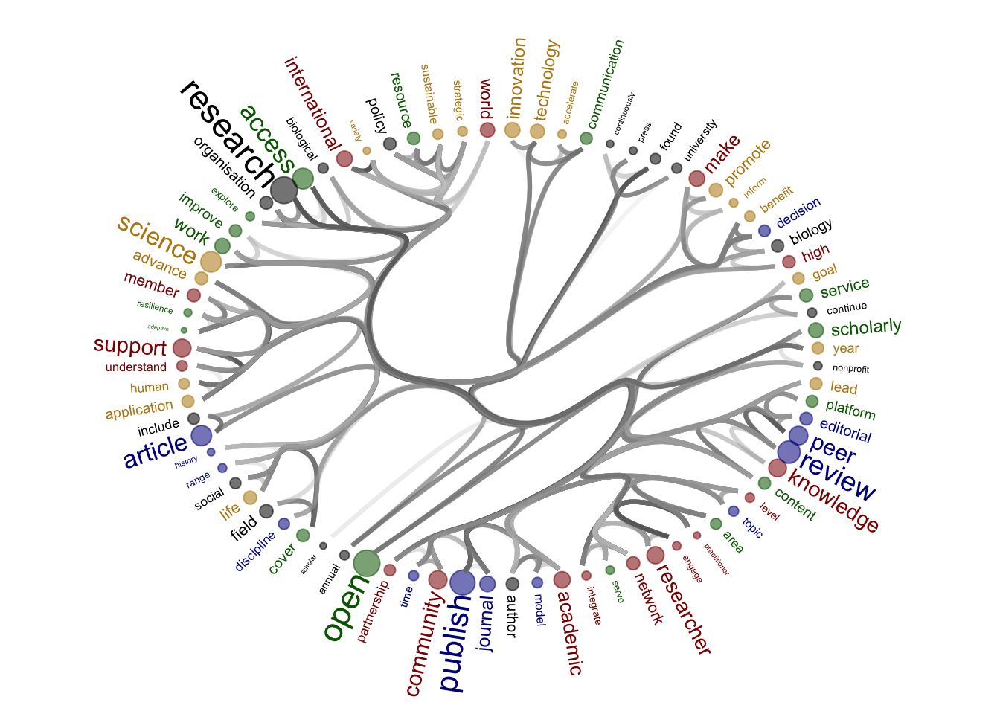
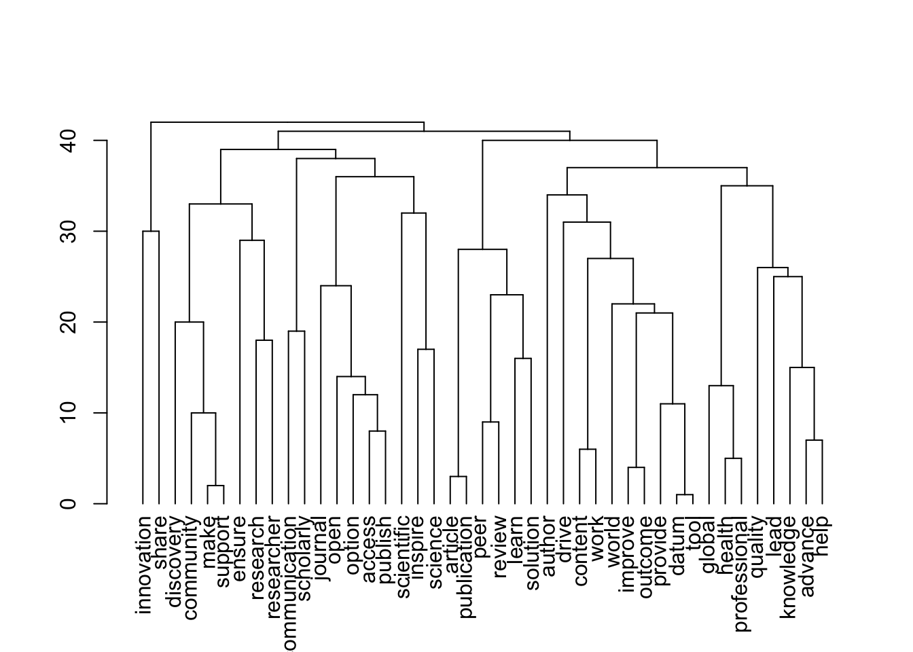
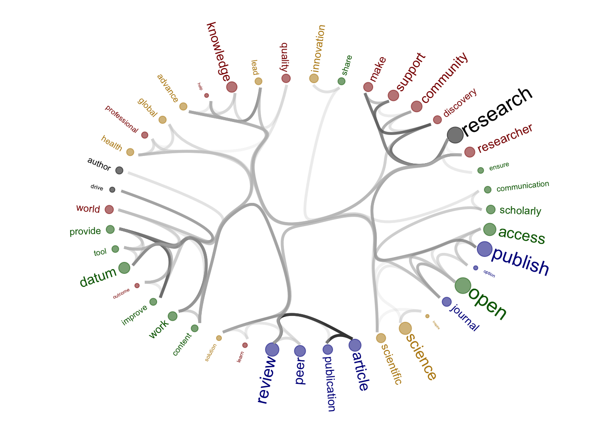

Last updated: 2023-11-10
Checks: 7 0
Knit directory:
workflowr-policy-landscape/
This reproducible R Markdown analysis was created with workflowr (version 1.7.1). The Checks tab describes the reproducibility checks that were applied when the results were created. The Past versions tab lists the development history.
Great! Since the R Markdown file has been committed to the Git repository, you know the exact version of the code that produced these results.
Great job! The global environment was empty. Objects defined in the global environment can affect the analysis in your R Markdown file in unknown ways. For reproduciblity it’s best to always run the code in an empty environment.
The command set.seed(20220505) was run prior to running
the code in the R Markdown file. Setting a seed ensures that any results
that rely on randomness, e.g. subsampling or permutations, are
reproducible.
Great job! Recording the operating system, R version, and package versions is critical for reproducibility.
Nice! There were no cached chunks for this analysis, so you can be confident that you successfully produced the results during this run.
Great job! Using relative paths to the files within your workflowr project makes it easier to run your code on other machines.
Great! You are using Git for version control. Tracking code development and connecting the code version to the results is critical for reproducibility.
The results in this page were generated with repository version ff64143. See the Past versions tab to see a history of the changes made to the R Markdown and HTML files.
Note that you need to be careful to ensure that all relevant files for
the analysis have been committed to Git prior to generating the results
(you can use wflow_publish or
wflow_git_commit). workflowr only checks the R Markdown
file, but you know if there are other scripts or data files that it
depends on. Below is the status of the Git repository when the results
were generated:
Ignored files:
Ignored: .DS_Store
Ignored: .Rhistory
Ignored: .Rproj.user/
Ignored: data/.DS_Store
Ignored: output/.DS_Store
Ignored: output/created_datasets/.DS_Store
Untracked files:
Untracked: analysis/Compare_datasets.Rmd
Untracked: data/original_dataset_reproducibility_check/
Untracked: gutenbergr_0.2.3.tar.gz
Untracked: output/Figure_Appendix_1A/
Untracked: output/Figure_Appendix_1B/
Untracked: output/Figure_Appendix_1C/
Unstaged changes:
Modified: analysis/index.Rmd
Modified: output/created_datasets/cleaned_data.csv
Note that any generated files, e.g. HTML, png, CSS, etc., are not included in this status report because it is ok for generated content to have uncommitted changes.
These are the previous versions of the repository in which changes were
made to the R Markdown
(analysis/6_Subgroups_comparison_text_similarities.Rmd) and
HTML (docs/6_Subgroups_comparison_text_similarities.html)
files. If you’ve configured a remote Git repository (see
?wflow_git_remote), click on the hyperlinks in the table
below to view the files as they were in that past version.
| File | Version | Author | Date | Message |
|---|---|---|---|---|
| Rmd | ff64143 | zuzannazagrodzka | 2023-11-10 | wflow_publish("./analysis/6_Subgroups_comparison_text_similarities.Rmd") |
| html | 8a4c1d4 | zuzannazagrodzka | 2023-11-10 | Build site. |
| Rmd | ffff9d6 | zuzannazagrodzka | 2023-11-10 | wflow_publish("./analysis/6_Subgroups_comparison_text_similarities.Rmd") |
Figure 1A in the Appendix shows gamma values (x-axis, means ± sd) that are the strength of association between a set of subgroups of some stakeholder documents (y-axis) and the corresponding topic.
High gamma values are strong associations.
We plotted the values for four main topics (side labels): Open Research (green), Community and Support (red), Innovation and Solutions (yellow) and Publication Process (blue).
The data for this are produced in 2_Topic_modeling
# rm(list=ls())library(tidyverse)── Attaching core tidyverse packages ──────────────────────── tidyverse 2.0.0 ──
✔ dplyr 1.1.3 ✔ readr 2.1.4
✔ forcats 1.0.0 ✔ stringr 1.5.0
✔ ggplot2 3.4.3 ✔ tibble 3.2.1
✔ lubridate 1.9.3 ✔ tidyr 1.3.0
✔ purrr 1.0.2
── Conflicts ────────────────────────────────────────── tidyverse_conflicts() ──
✖ dplyr::filter() masks stats::filter()
✖ dplyr::lag() masks stats::lag()
ℹ Use the conflicted package (<http://conflicted.r-lib.org/>) to force all conflicts to become errors# Importing data produced in "2_Topic_modeling.Rmd"
# df_doc_level_stm_gamma <- read_csv(file = "./output/created_datasets/df_doc_level_stm_gamma.csv")
# Importing data that we originally created and used in our analysis
df_doc_level_stm_gamma <- read.csv(file = "./data/original_dataset_reproducibility_check/original_df_doc_level_stm_gamma.csv")# Adding a column with subgroups of some stakeholders (publishers not-for-profit and for profit, and journals OA and not OA)
# Using newly created dataset
# df_subgroups <- read_csv(file = "./output/created_datasets/cleaned_data.csv")
df_subgroups <- read.csv(file = "./data/original_dataset_reproducibility_check/original_cleaned_data.csv")
colnames(df_subgroups) [1] "txt" "filename" "name" "doc_type"
[5] "stakeholder" "sentence_doc" "orig_word" "word_mix"
[9] "word" "org_subgroups"df_subgroups <- df_subgroups %>%
select(name, org_subgroups) %>%
distinct(.keep_all = FALSE)
df_doc_level_stm_gamma <- df_doc_level_stm_gamma %>%
left_join(df_subgroups, by = c("name" = "name")) %>%
select(-stakeholder) df_figure1_gamma <- df_doc_level_stm_gamma %>%
select(-total_topic, -total_sent)
df_figure1_gamma$prop <- df_figure1_gamma$prop *100
df_figure1_gamma_wide <- df_figure1_gamma %>%
spread(topic, prop) %>%
rename(topic_1 = `1`, topic_2 = `2`, topic_3 = `3`, topic_4 = `4`)
# Topic/Category 1: Open Research
# Topic/Category 2: Community & Support
# Topic/Category 3: Innovation & Solution
# Topic/Category 4: Publication process (control)
# Selecting only subgroups we are interested in
df_figure1_gamma_wide <- df_figure1_gamma_wide %>%
filter(org_subgroups %in% c("publishers_nonProfit", "publishers_Profit", "journals_nonOA", "journals_OA"))
dim(df_figure1_gamma_wide)[1] 45 6df_figure1_gamma_wide2 = data.frame(
document = rep(df_figure1_gamma_wide$name,4),
org_subgroups = rep(df_figure1_gamma_wide$org_subgroups,4),
type = c(rep("1. Open Research",45), rep("2. Community and Support",45), rep("3. Innovation and Solutions",45), rep("4. Publication Process", 45)), # the number is the number of rows in the data
# type = c(rep("1. Open Research",129), rep("2. Community and Support",129), rep("3. Innovation and Solutions",129), rep("4. Publication Process", 129)), # the number is the number of rows in the data
perc = c(df_figure1_gamma_wide$topic_1, df_figure1_gamma_wide$topic_2, df_figure1_gamma_wide$topic_3, df_figure1_gamma_wide$topic_4),
perc2 = c(df_figure1_gamma_wide$topic_1, df_figure1_gamma_wide$topic_2, df_figure1_gamma_wide$topic_3, df_figure1_gamma_wide$topic_4)
)
# adding quantiles values
sum_figure1_gamma_wide2 =
df_figure1_gamma_wide2 %>%
group_by(org_subgroups, type) %>%
dplyr::summarize(lower = quantile(perc, probs = .25), upper = quantile(perc, probs = .75), perc_fin = mean(perc)) %>%
rename(perc = perc_fin)`summarise()` has grouped output by 'org_subgroups'. You can override using the
`.groups` argument.figure_topics <- ggplot() +
geom_point(data = df_figure1_gamma_wide2, aes(x = perc, y = org_subgroups, colour = type), alpha = 0.2, position = position_jitter(), show.legend = FALSE) +
geom_pointrange(data = sum_figure1_gamma_wide2, aes(x = perc, xmin = lower, xmax = upper, y = org_subgroups, colour = type), show.legend = FALSE) +
facet_grid(.~type) +
labs(x = "Topics occuring in documents (%) gamma", y = "") +
scale_color_manual(values = c("dark green", "dark red", "darkgoldenrod", "dark blue")) +
theme_classic()
figure_topics
| Version | Author | Date |
|---|---|---|
| 8a4c1d4 | zuzannazagrodzka | 2023-11-10 |
# # UNCOMMENT TO SAVE FIGURES
figure_name <- paste0("./output/Figure_Appendix_1A/Figure_1A.png")
png(file=figure_name,
width= 3000, height= 2000, res=400)
figure_topics
dev.off()quartz_off_screen
2 The figures will be reproduced but for subgroups: journals nonOa and OA, publishers for- and not-for-profit.
Source of the functions: https://www.markhw.com/blog/word-similarity-graphs We combined two methods - word similarity graphs and stm modelling) to be able visually explore topics and words’ connections in the aims and missions documents. We used the word similarity method (https://www.markhw.com/blog/word-similarity-graphs) to calculate similarities between words and later to be able to plot them with topic modeling score values (package stm)
The three primary steps are: 1. Calculating the similarities between words (Cosine matrix). 2. Formatting these similarity scores into a symmetric matrix, where the diagonal contains 0s and the off-diagonal cells are similarities between words.
Loading packages
# remotes::install_github('talgalili/dendextend')
library(dendextend)
library(igraph)
library(ggraph)
library(reshape2)
library(dplyr)
library(tidyverse)
library(tidytext)Functions to create words similarities matrix.
Source of the code: https://www.markhw.com/blog/word-similarity-graphs
# Cosine matrix
cosine_matrix <- function(tokenized_data, lower = 0, upper = 1, filt = 0) {
if (!all(c("word", "id") %in% names(tokenized_data))) {
stop("tokenized_data must contain variables named word and id")
}
if (lower < 0 | lower > 1 | upper < 0 | upper > 1 | filt < 0 | filt > 1) {
stop("lower, upper, and filt must be 0 <= x <= 1")
}
docs <- length(unique(tokenized_data$id))
out <- tokenized_data %>%
count(id, word) %>%
group_by(word) %>%
mutate(n_docs = n()) %>%
ungroup() %>%
filter(n_docs <= (docs * upper) & n_docs > (docs * lower)) %>%
select(-n_docs) %>%
mutate(n = 1) %>%
spread(word, n, fill = 0) %>%
select(-id) %>%
as.matrix() %>%
lsa::cosine()
filt <- quantile(out[lower.tri(out)], filt)
out[out < filt] <- diag(out) <- 0
out <- out[rowSums(out) != 0, colSums(out) != 0]
return(out)
}
# Walktrap_topics
walktrap_topics <- function(g, ...) {
wt <- igraph::cluster_walktrap(g, ...)
membership <- igraph::cluster_walktrap(g, ...) %>%
igraph::membership() %>%
as.matrix() %>%
as.data.frame() %>%
rownames_to_column("word") %>%
arrange(V1) %>%
rename(group = V1)
dendrogram <- stats::as.dendrogram(wt)
return(list(membership = membership, dendrogram = dendrogram))
}# Importing data (created in `2_topic_modeling`)
# topics_df <- read.csv("./output/created_datasets/dataset_words_stm_5topics.csv")
# Importing dataset that we originally created and used in our analysis
topics_df <- read.csv(file = "./data/original_dataset_reproducibility_check/original_dataset_words_stm_5topics.csv")Creating a variable with the subgroups information
head(df_subgroups, 5) name org_subgroups
1 Africa Open Science and Hardware advocates
2 Amelica advocates
3 Bioline International advocates
4 Center for Open Science advocates
5 coalitionS advocatesdf_subgroups <- df_subgroups %>%
select("org_subgroups","name") %>%
distinct(.keep_all= FALSE)# Keeping only subgroups I am interested in
topics_df <- topics_df %>%
filter(org_subgroups %in% c("publishers_nonProfit", "publishers_Profit", "journals_nonOA", "journals_OA"))
head(topics_df, 3) txt
1 Since its inception in , The has maintained its position as one of the world s premier peer-reviewed publications in ecology, evolution, and behavior research. Its goals are to publish articles that are of broad interest to the readership, pose new and significant problems, introduce novel subjects, develop conceptual unification, and change the way people think. The emphasizes sophisticated methodologies and innovative theoretical syntheses all in an effort to advance the knowledge of organic evolution and other broad biological principles.
2 Since its inception in , The has maintained its position as one of the world s premier peer-reviewed publications in ecology, evolution, and behavior research. Its goals are to publish articles that are of broad interest to the readership, pose new and significant problems, introduce novel subjects, develop conceptual unification, and change the way people think. The emphasizes sophisticated methodologies and innovative theoretical syntheses all in an effort to advance the knowledge of organic evolution and other broad biological principles.
3 Since its inception in , The has maintained its position as one of the world s premier peer-reviewed publications in ecology, evolution, and behavior research. Its goals are to publish articles that are of broad interest to the readership, pose new and significant problems, introduce novel subjects, develop conceptual unification, and change the way people think. The emphasizes sophisticated methodologies and innovative theoretical syntheses all in an effort to advance the knowledge of organic evolution and other broad biological principles.
filename name doc_type stakeholder
1 American Naturalist_Aims.txt American Naturalist Aims journals
2 American Naturalist_Aims.txt American Naturalist Aims journals
3 American Naturalist_Aims.txt American Naturalist Aims journals
sentence_doc orig_word word_mix word org_subgroups
1 American Naturalist_1 inception inception inception journals_nonOA
2 American Naturalist_1 maintained maintain maintain journals_nonOA
3 American Naturalist_1 position position position journals_nonOA
mean_beta_t1 mean_beta_t2 mean_beta_t3 mean_beta_t4 mean_beta_t5
1 2.405878e-91 4.352779e-180 0.000424290 4.788456e-126 0.0002722336
2 9.211223e-04 1.647354e-03 0.001511078 1.051811e-95 0.0007933616
3 1.978509e-04 3.145697e-04 0.000516377 8.752072e-04 0.0008261841
mean_score_t1 mean_score_t2 mean_score_t3 mean_score_t4 mean_score_t5
1 1.648413e-89 2.982353e-178 0.02907068 3.280862e-124 0.01865237
2 1.200462e-02 2.146931e-02 0.01969328 1.370784e-94 0.01033957
3 4.666891e-03 7.420044e-03 0.01218026 2.064432e-02 0.01948796
sum_beta_t1 sum_beta_t2 sum_beta_t3 sum_beta_t4 sum_beta_t5 topic
1 2.405878e-90 5.223335e-179 0.008061510 3.830764e-125 0.006533606 3
2 9.211223e-03 1.976825e-02 0.028710484 8.414491e-95 0.019040677 2
3 1.978509e-03 3.774836e-03 0.009811162 7.001657e-03 0.019828419 4
highest_mean_score highest_mean_beta
1 0.02907068 0.0004242900
2 0.02146931 0.0016473540
3 0.02064432 0.0008752072dim(topics_df)[1] 6659 28stake_names <- unique(topics_df$org_subgroups)
count <- 1
figure_list <- vector()
for (stake in stake_names) {
n <- count # number of the subsubgroups in the list
stakeholder_name <- stake_names[n] # substakeholder's name
# selecting data with the right name of the substakeholder
dat <- topics_df %>%
select(org_subgroups, sentence_doc, word) %>%
rename(id = sentence_doc) %>%
filter(org_subgroups %in% stakeholder_name) %>%
select(-org_subgroups)
#####################
# Calculating similarity matrix
cos_mat <- cosine_matrix(dat, lower = 0.050, upper = 1, filt = 0.9)
# Getting words used in the network
word_list_net <- rownames(cos_mat)
grep("workflow", word_list_net)
print(dim(cos_mat))
# Creating a graph
g <- graph_from_adjacency_matrix(cos_mat, mode = "undirected", weighted = TRUE)
topics = walktrap_topics(g)
print(stakeholder_name)
plot(topics$dendrogram)
subtrees <- partition_leaves(topics$dendrogram)
leaves <- subtrees[[1]]
pathRoutes <- function(leaf) {
which(sapply(subtrees, function(x) leaf %in% x))
}
paths <- lapply(leaves, pathRoutes)
edges = NULL
for(a in 1:length(paths)){
# print(a)
for(b in c(1:(length(paths[[a]])-1))){
if(b == (length(paths[[a]])-1)){
tmp_df = data.frame(
from = paths[[a]][b],
to = leaves[a]
)
} else {
tmp_df = data.frame(
from = paths[[a]][b],
to = paths[[a]][b+1]
)
}
edges = rbind(edges, tmp_df)
}
}
connect = melt(cos_mat) # library reshape required
colnames(connect) = c("from", "to", "value")
connect = subset(connect, value != 0)
# create a vertices data.frame. One line per object of our hierarchy
vertices <- data.frame(
name = unique(c(as.character(edges$from), as.character(edges$to)))
)
# Let's add a column with the group of each name. It will be useful later to color points
vertices$group <- edges$from[ match( vertices$name, edges$to ) ]
#Let's add information concerning the label we are going to add: angle, horizontal adjustement and potential flip
#calculate the ANGLE of the labels
#vertices$id <- NA
#myleaves <- which(is.na( match(vertices$name, edges$from) ))
#nleaves <- length(myleaves)
#vertices$id[ myleaves ] <- seq(1:nleaves)
#vertices$angle <- 90 - 360 * vertices$id / nleaves
# calculate the alignment of labels: right or left
# If I am on the left part of the plot, my labels have currently an angle < -90
#vertices$hjust <- ifelse( vertices$angle < -90, 1, 0)
# flip angle BY to make them readable
#vertices$angle <- ifelse(vertices$angle < -90, vertices$angle+180, vertices$angle)
# replacing "group" value with the topic numer from the STM
# Colour words by topic modelling topics (STM)
# I have to change the group numbers in topics
stm_top <- topics_df %>%
select(org_subgroups, word, topic = topic) %>%
filter(org_subgroups %in% stakeholder_name) %>%
select(-org_subgroups)
stm_top$topic <- as.factor(stm_top$topic)
stm_top <- unique(stm_top)
# Removing group column and creating a new one based on the stm info
vertices <- vertices
vertices <- vertices %>%
left_join(stm_top, by = c("name" = "word")) %>%
select(-group) %>%
rename(group = topic)
# Adding a beta value so I can use it in the graph
stm_beta <- topics_df %>%
select(org_subgroups, word, beta = highest_mean_beta) %>%
filter(org_subgroups %in% stakeholder_name) %>%
select(-org_subgroups)
stm_beta <- unique(stm_beta)
dim(stm_beta)
vertices <- vertices %>%
left_join(stm_beta, by = c("name" = "word"))
vertices$beta_size = vertices$beta
##############################################################
# Create a graph object
mygraph <- igraph::graph_from_data_frame(edges, vertices=vertices)
# The connection object must refer to the ids of the leaves:
from <- match( connect$from, vertices$name)
to <- match( connect$to, vertices$name)
# Basic usual argument
tmp_plt = ggraph(mygraph, layout = 'dendrogram', circular = T) +
geom_node_point(aes(filter = leaf, x = x*1.05, y=y*1.05, alpha=0.2), size =0, colour = "white") +
#colour=group, size=value
scale_colour_manual(values= c("dark green", "dark red", "darkgoldenrod", "dark blue", "black"), na.value = "black") +
geom_conn_bundle(data = get_con(from = from, to = to, col = connect$value), tension = 0.9, aes(colour = col, alpha = col+0.5), width = 1.1) +
scale_edge_color_continuous(low="white", high="black") +
# geom_node_text(aes(x = x*1.1, y=y*1.1, filter = leaf, label=name, angle = angle, hjust=hjust), size=5, alpha=1) +
geom_node_text(aes(x = x*1.1, y=y*1.1, filter = leaf, label=name, colour = group, angle = 0, hjust = 0.5, size = beta_size), alpha=1) +
theme_void() +
theme(
legend.position="none",
plot.margin=unit(c(0,0,0,0),"cm"),
) +
expand_limits(x = c(-1.5, 1.5), y = c(-1.5, 1.5))
g <- ggplot_build(tmp_plt)
tmp_dat = g[[3]]$data
tmp_dat$position = NA
tmp_dat_a = subset(tmp_dat, x >= 0)
tmp_dat_a = tmp_dat_a[order(-tmp_dat_a$y),]
tmp_dat_a = subset(tmp_dat_a, !is.na(beta))
tmp_dat_a$order = 1:nrow(tmp_dat_a)
tmp_dat_b = subset(tmp_dat, x < 0)
tmp_dat_b = tmp_dat_b[order(-tmp_dat_b$y),]
tmp_dat_b = subset(tmp_dat_b, !is.na(beta))
tmp_dat_b$order = (nrow(tmp_dat_a) +nrow(tmp_dat_b)) : (nrow(tmp_dat_a) +1)
tmp_dat = rbind(tmp_dat_a, tmp_dat_b)
vertices = left_join(vertices, tmp_dat[,c("name", "order")], by = c("name"))
vert_save = vertices
vertices = vert_save
vertices$id <- NA
vertices = vertices[order(vertices$order),]
myleaves <- which(is.na( match(vertices$name, edges$from) ))
nleaves <- length(myleaves)
vertices$id[ myleaves ] <- seq(1:nleaves)
vertices$angle <- 90 - 360 * vertices$id / nleaves
# calculate the alignment of labels: right or left
# If I am on the left part of the plot, my labels have currently an angle < -90
vertices$hjust <- ifelse( vertices$angle < -90, 1, 0)
# flip angle BY to make them readable
vertices$angle <- ifelse(vertices$angle < -90, vertices$angle+180, vertices$angle)
vertices = vertices[order(as.numeric(rownames(vertices))),]
mygraph <- igraph::graph_from_data_frame(edges, vertices=vertices)
figure_to_save <- ggraph(mygraph, layout = 'dendrogram', circular = T) +
geom_node_point(aes(filter = leaf, x = x*1.05, y=y*1.05, alpha=0.2, colour = group, size = beta_size)) +
#colour=group, size=value
scale_colour_manual(values= c("dark green", "dark red", "darkgoldenrod", "dark blue", "black"), na.value = "black") +
geom_conn_bundle(data = get_con(from = from, to = to, col = connect$value), tension = 0.99, aes(colour = col, alpha = col+0.5), width = 1.1) +
scale_edge_color_continuous(low="grey90", high="black") +
geom_node_text(aes(x = x*1.1, y=y*1.1, filter = leaf, label=name, colour = group, angle = angle, hjust = hjust, size = beta_size)) +
theme_void() +
theme(
legend.position="none",
plot.margin=unit(c(0,0,0,0),"cm"),
) +
expand_limits(x = c(-1.5, 1.5), y = c(-1.5, 1.5))
assign(paste0(stake_names[n], "_figure1B"), figure_to_save)
# name_temp <- assign(paste0(stake_names[n], "_figure2b"), figure_to_save)
figure_list <- append(figure_list, paste0(stake_names[n], "_figure1B"))
print(figure_to_save)
#####################
count <- count + 1
}[1] 71 71
[1] "journals_nonOA"Warning: Using the `size` aesthetic in this geom was deprecated in ggplot2 3.4.0.
ℹ Please use `linewidth` in the `default_aes` field and elsewhere instead.
This warning is displayed once every 8 hours.
Call `lifecycle::last_lifecycle_warnings()` to see where this warning was
generated.
| Version | Author | Date |
|---|---|---|
| 8a4c1d4 | zuzannazagrodzka | 2023-11-10 |

| Version | Author | Date |
|---|---|---|
| 8a4c1d4 | zuzannazagrodzka | 2023-11-10 |
[1] 29 29
[1] "journals_OA"
| Version | Author | Date |
|---|---|---|
| 8a4c1d4 | zuzannazagrodzka | 2023-11-10 |

| Version | Author | Date |
|---|---|---|
| 8a4c1d4 | zuzannazagrodzka | 2023-11-10 |
[1] 80 80
[1] "publishers_nonProfit"
| Version | Author | Date |
|---|---|---|
| 8a4c1d4 | zuzannazagrodzka | 2023-11-10 |

| Version | Author | Date |
|---|---|---|
| 8a4c1d4 | zuzannazagrodzka | 2023-11-10 |
[1] 43 43
[1] "publishers_Profit"
| Version | Author | Date |
|---|---|---|
| 8a4c1d4 | zuzannazagrodzka | 2023-11-10 |

| Version | Author | Date |
|---|---|---|
| 8a4c1d4 | zuzannazagrodzka | 2023-11-10 |
# Saving figures individually
figure_list
figure_name <- paste0("./output/Figure_Appendix_1B/journals_nonOA_figure1B.png")
png(file=figure_name,
width= 3000, height= 3000, res=400)
journals_nonOA_figure1B
dev.off()
figure_name <- paste0("./output/Figure_Appendix_1B/journals_OA_figure1B.png")
png(file=figure_name,
width= 3000, height= 3000, res=400)
journals_OA_figure1B
dev.off()
figure_name <- paste0("./output/Figure_Appendix_1B/publishers_nonProfit_figure1B.png")
png(file=figure_name,
width= 3000, height= 3000, res=400)
publishers_nonProfit_figure1B
dev.off()
figure_name <- paste0("./output/Figure_Appendix_1B/publishers_Profit_figure1B.png")
png(file=figure_name,
width= 3000, height= 3000, res=400)
publishers_Profit_figure1B
dev.off()sessionInfo()R version 4.3.1 (2023-06-16)
Platform: x86_64-apple-darwin20 (64-bit)
Running under: macOS Monterey 12.6
Matrix products: default
BLAS: /Library/Frameworks/R.framework/Versions/4.3-x86_64/Resources/lib/libRblas.0.dylib
LAPACK: /Library/Frameworks/R.framework/Versions/4.3-x86_64/Resources/lib/libRlapack.dylib; LAPACK version 3.11.0
locale:
[1] en_US.UTF-8/en_US.UTF-8/en_US.UTF-8/C/en_US.UTF-8/en_US.UTF-8
time zone: Europe/London
tzcode source: internal
attached base packages:
[1] stats graphics grDevices utils datasets methods base
other attached packages:
[1] tidytext_0.4.1 reshape2_1.4.4 ggraph_2.1.0 igraph_1.5.1
[5] dendextend_1.17.1 lubridate_1.9.3 forcats_1.0.0 stringr_1.5.0
[9] dplyr_1.1.3 purrr_1.0.2 readr_2.1.4 tidyr_1.3.0
[13] tibble_3.2.1 ggplot2_3.4.3 tidyverse_2.0.0 workflowr_1.7.1
loaded via a namespace (and not attached):
[1] gtable_0.3.4 xfun_0.40 bslib_0.5.1 ggrepel_0.9.4
[5] processx_3.8.2 lattice_0.21-8 callr_3.7.3 tzdb_0.4.0
[9] vctrs_0.6.3 tools_4.3.1 ps_1.7.5 generics_0.1.3
[13] fansi_1.0.4 janeaustenr_1.0.0 tokenizers_0.3.0 pkgconfig_2.0.3
[17] Matrix_1.5-4.1 lifecycle_1.0.3 compiler_4.3.1 farver_2.1.1
[21] git2r_0.32.0 munsell_0.5.0 lsa_0.73.3 ggforce_0.4.1
[25] graphlayouts_1.0.2 getPass_0.2-2 httpuv_1.6.11 SnowballC_0.7.1
[29] htmltools_0.5.6 sass_0.4.7 yaml_2.3.7 crayon_1.5.2
[33] later_1.3.1 pillar_1.9.0 jquerylib_0.1.4 whisker_0.4.1
[37] MASS_7.3-60 cachem_1.0.8 viridis_0.6.4 tidyselect_1.2.0
[41] digest_0.6.33 stringi_1.7.12 labeling_0.4.3 polyclip_1.10-6
[45] rprojroot_2.0.3 fastmap_1.1.1 grid_4.3.1 colorspace_2.1-0
[49] cli_3.6.1 magrittr_2.0.3 tidygraph_1.2.3 utf8_1.2.3
[53] withr_2.5.1 scales_1.2.1 promises_1.2.1 timechange_0.2.0
[57] rmarkdown_2.25 httr_1.4.7 gridExtra_2.3 hms_1.1.3
[61] evaluate_0.21 knitr_1.44 viridisLite_0.4.2 rlang_1.1.1
[65] Rcpp_1.0.11 glue_1.6.2 tweenr_2.0.2 rstudioapi_0.15.0
[69] jsonlite_1.8.7 plyr_1.8.9 R6_2.5.1 fs_1.6.3
sessionInfo()R version 4.3.1 (2023-06-16)
Platform: x86_64-apple-darwin20 (64-bit)
Running under: macOS Monterey 12.6
Matrix products: default
BLAS: /Library/Frameworks/R.framework/Versions/4.3-x86_64/Resources/lib/libRblas.0.dylib
LAPACK: /Library/Frameworks/R.framework/Versions/4.3-x86_64/Resources/lib/libRlapack.dylib; LAPACK version 3.11.0
locale:
[1] en_US.UTF-8/en_US.UTF-8/en_US.UTF-8/C/en_US.UTF-8/en_US.UTF-8
time zone: Europe/London
tzcode source: internal
attached base packages:
[1] stats graphics grDevices utils datasets methods base
other attached packages:
[1] tidytext_0.4.1 reshape2_1.4.4 ggraph_2.1.0 igraph_1.5.1
[5] dendextend_1.17.1 lubridate_1.9.3 forcats_1.0.0 stringr_1.5.0
[9] dplyr_1.1.3 purrr_1.0.2 readr_2.1.4 tidyr_1.3.0
[13] tibble_3.2.1 ggplot2_3.4.3 tidyverse_2.0.0 workflowr_1.7.1
loaded via a namespace (and not attached):
[1] gtable_0.3.4 xfun_0.40 bslib_0.5.1 ggrepel_0.9.4
[5] processx_3.8.2 lattice_0.21-8 callr_3.7.3 tzdb_0.4.0
[9] vctrs_0.6.3 tools_4.3.1 ps_1.7.5 generics_0.1.3
[13] fansi_1.0.4 janeaustenr_1.0.0 tokenizers_0.3.0 pkgconfig_2.0.3
[17] Matrix_1.5-4.1 lifecycle_1.0.3 compiler_4.3.1 farver_2.1.1
[21] git2r_0.32.0 munsell_0.5.0 lsa_0.73.3 ggforce_0.4.1
[25] graphlayouts_1.0.2 getPass_0.2-2 httpuv_1.6.11 SnowballC_0.7.1
[29] htmltools_0.5.6 sass_0.4.7 yaml_2.3.7 crayon_1.5.2
[33] later_1.3.1 pillar_1.9.0 jquerylib_0.1.4 whisker_0.4.1
[37] MASS_7.3-60 cachem_1.0.8 viridis_0.6.4 tidyselect_1.2.0
[41] digest_0.6.33 stringi_1.7.12 labeling_0.4.3 polyclip_1.10-6
[45] rprojroot_2.0.3 fastmap_1.1.1 grid_4.3.1 colorspace_2.1-0
[49] cli_3.6.1 magrittr_2.0.3 tidygraph_1.2.3 utf8_1.2.3
[53] withr_2.5.1 scales_1.2.1 promises_1.2.1 timechange_0.2.0
[57] rmarkdown_2.25 httr_1.4.7 gridExtra_2.3 hms_1.1.3
[61] evaluate_0.21 knitr_1.44 viridisLite_0.4.2 rlang_1.1.1
[65] Rcpp_1.0.11 glue_1.6.2 tweenr_2.0.2 rstudioapi_0.15.0
[69] jsonlite_1.8.7 plyr_1.8.9 R6_2.5.1 fs_1.6.3